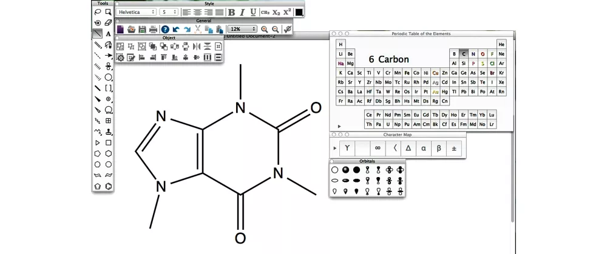

In 1985, a small change to a Harvard chemistry lecture could cost Sally Evans an afternoon. Her husband David might want to move part of a chemical structure. Sally, who drew the figures for his lectures and papers, had to lay out the stencils and ink the drawing again. A complicated sheet could keep her at the drafting table for four hours. A smudge near the end could send her back to the beginning.
In David’s account, Sally asked a graduate student who knew how to program if he would like to save her marriage. Stewart Rubenstein had a reason of his own to take the question seriously. He had a thesis ahead of him, with hundreds of structures to draw. The program the three of them developed became ChemDraw.
Who pays for a small revision?
Sally had taught science and mathematics in California. When David moved his lab from Caltech to Harvard in 1983, she helped design its new space in Cambridge and prepare teaching materials. Plenty of accounts since have called her the professor’s wife. Of the three, she knew best how a blank sheet of paper turns into a figure a publisher can use.
Look at the old chemistry stencil. Its edges, holes and hexagons took care of precision, so drawing accurately was not the hard part. The trouble is that the page is shared. Once a ring was inked, it lived on the same page as labels, arrows and reaction conditions. Even when David wanted to change only a small piece, Sally couldn’t lift the others out of the way.

If I had been observing that work, I would probably have timed the first drawing. That would have missed the expensive part. I’d learn more by waiting until the sheet was nearly finished, then inviting the person asking for a change to point at it. How much paper did their finger cover? How much did the person holding the pen have to draw again?
A drawing worth taking to a coffee break
The Evanses bought a Macintosh in early 1985. Its mouse could point directly at an object on the screen. Stewart understood the chemistry as well as the machine. David, Sally and students in the lab gave him feedback as he developed the program. His own unfinished thesis supplied a good acceptance test. Could he use the drawing in his manuscript? Could he still meet a deadline if his adviser asked for a change?
A general drawing program could make a hexagon out of six lines. What should happen to the bond attached to its outside edge when the ring moved? To a chemist, which lines join is part of the meaning of the drawing. Keeping those relationships in the file gives a revision a chance to stay local. Years later ChemDraw could calculate a molecular formula from a drawing, a good indication of how much more the file held than ink.

In July 1985, Stewart and the Evanses demonstrated ChemDraw during a break at a chemistry conference. The venue was well chosen. Everyone watching already knew what such a figure cost to draw by hand, and after the demo they could price the software themselves. Stuart Schreiber, then at Yale, became its first paying customer. Later, David put Stewart’s phone number on the acknowledgments slide of his talks. By then the audience had seen an entire lecture illustrated with the software. They had something concrete to call about.

Put the drawing where the experiment is recorded
My original article followed a long list of product releases. Looking back, I’d linger over E-Notebook in 2000. Integrating ChemDraw into an electronic lab notebook meant that a chemist could draw a structure in the experiment record itself. On a feature list that sounds like adding an editor. It makes more sense when you think about the colleague who inherits the record.
Suppose someone sends you an experiment with a reaction scheme pasted into it. The picture is perfectly adequate for reading a report. To correct the structure, though, you have to find the editable file, establish that it matches this particular record, make the change and paste it back. Each step is possible. Weeks later, the awkward part is remembering where the picture came from. Editing it in the record spares the next person a filename only its author knew.
Getting it in there was only the first step. Early web drawing depended on Internet Explorer and an installed ActiveX component. You could have the right experiment open and still lack what you needed to draw. In 2015 the team integrated ChemDraw Direct into its cloud notebook, removing that dependency. The 2017 release of ChemDraw JS brought embeddable structure editing to other web applications. For the person at the keyboard, the difference comes down to one question. Open this record on a different computer. Can you still carry on drawing from here?

At Signals, I had to walk the other way
When I worked on material lineage in Signals Notebook, researchers could already register a derived material from an experiment. During the work, that order makes sense. The experiment is open and the information is at hand. Months later, someone investigating a result may have only a material ID. The system filed the information under an experiment whose name this person doesn’t know.
Even identifying the material only gets them part of the way. A material can have several lots. Which lot went into an experiment, and where did that lot go next? A large chart can display every relationship and still leave the researcher copying an ID into a search box to check the underlying record.
I put a Lineage tab in the material detail view so researchers could start with what they had found. They could follow a branch on the map and inspect the lot and its associated records. I had a choice about how much detail to put on a node. Showing every property would save a click when looking at one item and make the whole thing harder to read as soon as it branched. I kept the extra click for detail so people could still see where a branch came from.

In validation for one material-tracing task, the time to follow a lineage went from about two hours to forty minutes. That number is for that particular task, and what it saved was exactly the time spent opening records, copying identifiers and checking the trail again. When Sally retraced a line on paper, anyone could see the rework. On a screen it can look like nothing more than a few copies, a few pastes and another press of the back button.
Leave five minutes for a change
I’d reserve the last five minutes of a professional software demo for one small request. Open what you just finished, change one thing, then give it to somebody else. Listen to what has to be explained during the handoff. Which folder holds the source file? Which lot should they open? Why is yesterday’s drawing still on the screen? Those hurried instructions tell me where the design needs attention.
I still find the old stencil beautiful. It already made a perfectly good hexagon. When someone asks me where to start improving a professional tool, I’d like to see who gets called back to the table after the hexagon is finished.
- Original WeChat essay, Informatics R&D, June 2021
- David A. Evans, History of the Harvard ChemDraw Project
- C&EN interviews with early participants and the caffeine screenshot
- C&EN anniversary report and Fieser stencil photograph
- Revvity Signals timeline and David Evans portrait
- Revvity Signals documentation on browser-based editing
- My Signals Notebook material lineage case and task validation